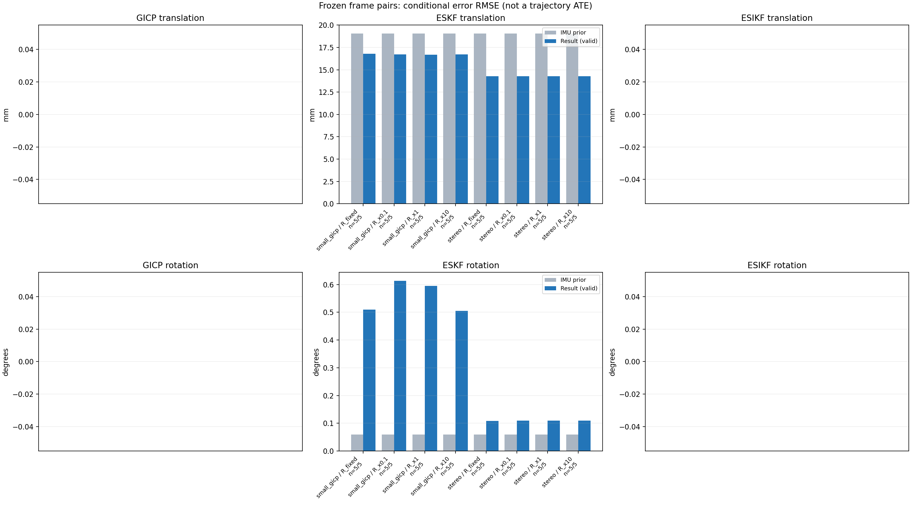

20261015_112940_pitch_up · depth=disparity_cache · cache=a251a63a0f576bf00faa
模型视差：/home/ubuntu22/slam/SIO_SLAM/models/tensorrt/disp_896x448_fp16.plan；engine SHA256=604cf6ac1f705c877260711730dd5d2d58c2a21f3020c03c668401ef7fb1e768。输入为生产裁剪与光照处理后的 RGB 0..255；此实验使用原始浮点像素视差，不应用完整前端的邻域视差后处理。
原始 ONNX SHA256：e9f49736a65d68d06681add463866b6defdf78fdd7f4f50f6cc941b682fdc0bc。
代价体图改写验证：ONNX Runtime 固定随机特征输入，最大绝对误差 0；该项检查图改写，完整模型精度仍需由录制数据评估。
配准代码版本：744ac2d993ae629b0cc44a3b1d995e04ab4fad48；观测生成版本：744ac2d993ae629b0cc44a3b1d995e04ab4fad48。
固定图像对与纯 IMU 先验；ESKF 回放固定 GICP 观测，ESIKF 直接读取点云。真值只用于此报告。
同时查看 converged 与 solver_status：上游默认 Stereo 在 max_iter / stopped_at_minimum 时也可能置 converged=true。valid 表示输入检查通过，不表示精度提升。欧氏 GICP 未提供独立的点距 RMSE，该列显示 NaN。
误差按每对图像的锚点计算，单位 m / degrees。此处 RMSE 不是全序列 ATE；末帧受同一锚点条件约束。NIS 与条件马氏距离是诊断量，少量相关图像对不能用于宣称协方差已校准。
全部指标 CSV · R / P / K 矩阵 CSV · Stereo 求解逐轮 CSV · ESIKF 逐轮 CSV · 配置快照 · 矢量图
| stage | method | variant | valid | total | translation RMSE (m) | rotation RMSE (deg) |
|---|---|---|---|---|---|---|
| eskf | small_gicp | R_fixed | 5 | 5 | 0.016779 | 0.5099 |
| eskf | small_gicp | R_x0.1 | 5 | 5 | 0.016722 | 0.61355 |
| eskf | small_gicp | R_x1 | 5 | 5 | 0.016702 | 0.59541 |
| eskf | small_gicp | R_x10 | 5 | 5 | 0.016717 | 0.50506 |
| eskf | stereo | R_fixed | 5 | 5 | 0.014273 | 0.10851 |
| eskf | stereo | R_x0.1 | 5 | 5 | 0.014273 | 0.10973 |
| eskf | stereo | R_x1 | 5 | 5 | 0.014273 | 0.10972 |
| eskf | stereo | R_x10 | 5 | 5 | 0.014273 | 0.1097 |

| stage | case | method | variant | status | solver_status | inliers | converged | covariance_convention | covariance_from_hessian | fitness | registration_rmse_m | prior_trans_error_m | result_trans_error_m | prior_rot_error_deg | result_rot_error_deg | R_rot_trace_rad2 | R_pos_trace_m2 | nis_regularized |
|---|---|---|---|---|---|---|---|---|---|---|---|---|---|---|---|---|---|---|
| eskf | static_start | small_gicp | R_x0.1 | updated | 6420 | 1 | right_source_body | 1 | 0.8934 | nan | 0.00012006 | 0.0074789 | 0.0069246 | 0.33065 | 1.0124e-06 | 4.4627e-06 | 0.017251 | |
| eskf | static_start | small_gicp | R_x1 | updated | 6420 | 1 | right_source_body | 1 | 0.8934 | nan | 0.00012006 | 0.0074649 | 0.0069246 | 0.33009 | 1.0124e-05 | 4.4627e-05 | 0.017205 | |
| eskf | static_start | small_gicp | R_x10 | updated | 6420 | 1 | right_source_body | 1 | 0.8934 | nan | 0.00012006 | 0.0073311 | 0.0069246 | 0.32473 | 0.00010124 | 0.00044627 | 0.016767 | |
| eskf | static_start | small_gicp | R_fixed | updated | 6420 | 1 | right_source_body | 1 | 0.8934 | nan | 0.00012006 | 0.0071815 | 0.0069246 | 0.32277 | 0.00022846 | 0.0012 | 0.016301 | |
| eskf | static_start | stereo | R_x0.1 | updated | max_iter | 5155 | 1 | left_target_body | 1 | 0.71957 | 0.091501 | 0.00012006 | 0.00098338 | 0.0069246 | 0.021757 | 2.2232e-09 | 1.2647e-08 | 8.2949e-05 |
| eskf | static_start | stereo | R_x1 | updated | max_iter | 5155 | 1 | left_target_body | 1 | 0.71957 | 0.091501 | 0.00012006 | 0.00098338 | 0.0069246 | 0.021757 | 2.2232e-08 | 1.2647e-07 | 8.2949e-05 |
| eskf | static_start | stereo | R_x10 | updated | max_iter | 5155 | 1 | left_target_body | 1 | 0.71957 | 0.091501 | 0.00012006 | 0.00098335 | 0.0069246 | 0.021757 | 2.2232e-07 | 1.2647e-06 | 8.2946e-05 |
| eskf | static_start | stereo | R_fixed | updated | max_iter | 5155 | 1 | left_target_body | 1 | 0.71957 | 0.091501 | 0.00012006 | 0.00096557 | 0.0069246 | 0.021447 | 0.00022846 | 0.0012 | 8.0703e-05 |
| eskf | sync_motion | small_gicp | R_x0.1 | updated | 6713 | 1 | right_source_body | 1 | 0.90423 | nan | 0.00096706 | 0.01303 | 0.039675 | 1.1124 | 1.2213e-06 | 4.9471e-06 | 3.3277 | |
| eskf | sync_motion | small_gicp | R_x1 | updated | 6713 | 1 | right_source_body | 1 | 0.90423 | nan | 0.00096706 | 0.012909 | 0.039675 | 1.0629 | 1.2213e-05 | 4.9471e-05 | 3.0957 | |
| eskf | sync_motion | small_gicp | R_x10 | updated | 6713 | 1 | right_source_body | 1 | 0.90423 | nan | 0.00096706 | 0.01311 | 0.039675 | 0.80661 | 0.00012213 | 0.00049471 | 1.8248 | |
| eskf | sync_motion | small_gicp | R_fixed | updated | 6713 | 1 | right_source_body | 1 | 0.90423 | nan | 0.00096706 | 0.013573 | 0.039675 | 0.88848 | 0.00022846 | 0.0012 | 1.3173 | |
| eskf | sync_motion | stereo | R_x0.1 | updated | max_iter | 5348 | 1 | left_target_body | 1 | 0.72742 | 0.11716 | 0.00096706 | 0.0074821 | 0.039675 | 0.20723 | 2.3153e-09 | 1.3282e-08 | 0.011312 |
| eskf | sync_motion | stereo | R_x1 | updated | max_iter | 5348 | 1 | left_target_body | 1 | 0.72742 | 0.11716 | 0.00096706 | 0.007482 | 0.039675 | 0.20723 | 2.3153e-08 | 1.3282e-07 | 0.01131 |
| eskf | sync_motion | stereo | R_x10 | updated | max_iter | 5348 | 1 | left_target_body | 1 | 0.72742 | 0.11716 | 0.00096706 | 0.0074814 | 0.039675 | 0.20717 | 2.3153e-07 | 1.3282e-06 | 0.011291 |
| eskf | sync_motion | stereo | R_fixed | updated | max_iter | 5348 | 1 | left_target_body | 1 | 0.72742 | 0.11716 | 0.00096706 | 0.0074746 | 0.039675 | 0.20384 | 0.00022846 | 0.0012 | 0.0048875 |
| eskf | main_motion | small_gicp | R_x0.1 | updated | 16760 | 1 | right_source_body | 1 | 0.79844 | nan | 0.0064081 | 0.024767 | 0.02833 | 0.083994 | 1.2974e-07 | 2.9296e-06 | 0.00051265 | |
| eskf | main_motion | small_gicp | R_x1 | updated | 16760 | 1 | right_source_body | 1 | 0.79844 | nan | 0.0064081 | 0.024767 | 0.02833 | 0.083999 | 1.2974e-06 | 2.9296e-05 | 0.000512 | |
| eskf | main_motion | small_gicp | R_x10 | updated | 16760 | 1 | right_source_body | 1 | 0.79844 | nan | 0.0064081 | 0.024769 | 0.02833 | 0.084053 | 1.2974e-05 | 0.00029296 | 0.00050564 | |
| eskf | main_motion | small_gicp | R_fixed | updated | 16760 | 1 | right_source_body | 1 | 0.79844 | nan | 0.0064081 | 0.024768 | 0.02833 | 0.081978 | 0.00022846 | 0.0012 | 0.00041889 | |
| eskf | main_motion | stereo | R_x0.1 | updated | max_iter | 16726 | 1 | left_target_body | 1 | 0.79489 | 0.17895 | 0.0064081 | 0.0063595 | 0.02833 | 0.023102 | 4.0912e-10 | 9.1955e-09 | 5.4597e-05 |
| eskf | main_motion | stereo | R_x1 | updated | max_iter | 16726 | 1 | left_target_body | 1 | 0.79489 | 0.17895 | 0.0064081 | 0.0063595 | 0.02833 | 0.023102 | 4.0912e-09 | 9.1955e-08 | 5.4597e-05 |
| eskf | main_motion | stereo | R_x10 | updated | max_iter | 16726 | 1 | left_target_body | 1 | 0.79489 | 0.17895 | 0.0064081 | 0.0063595 | 0.02833 | 0.023102 | 4.0912e-08 | 9.1955e-07 | 5.4595e-05 |
| eskf | main_motion | stereo | R_fixed | updated | max_iter | 16726 | 1 | left_target_body | 1 | 0.79489 | 0.17895 | 0.0064081 | 0.0063596 | 0.02833 | 0.022039 | 0.00022846 | 0.0012 | 4.6423e-05 |
| eskf | main_motion_long | small_gicp | R_x0.1 | updated | 15680 | 1 | right_source_body | 1 | 0.64842 | nan | 0.038923 | 0.010655 | 0.12422 | 0.71737 | 1.5056e-07 | 3.246e-06 | 0.37866 | |
| eskf | main_motion_long | small_gicp | R_x1 | updated | 15680 | 1 | right_source_body | 1 | 0.64842 | nan | 0.038923 | 0.010651 | 0.12422 | 0.71633 | 1.5056e-06 | 3.246e-05 | 0.37814 | |
| eskf | main_motion_long | small_gicp | R_x10 | updated | 15680 | 1 | right_source_body | 1 | 0.64842 | nan | 0.038923 | 0.010617 | 0.12422 | 0.70611 | 1.5056e-05 | 0.0003246 | 0.37299 | |
| eskf | main_motion_long | small_gicp | R_fixed | updated | 15680 | 1 | right_source_body | 1 | 0.64842 | nan | 0.038923 | 0.010624 | 0.12422 | 0.62239 | 0.00022846 | 0.0012 | 0.30631 | |
| eskf | main_motion_long | stereo | R_x0.1 | updated | max_iter | 15236 | 1 | left_target_body | 1 | 0.63092 | 0.23368 | 0.038923 | 0.025488 | 0.12422 | 0.12259 | 4.9197e-10 | 1.1807e-08 | 0.00091494 |
| eskf | main_motion_long | stereo | R_x1 | updated | max_iter | 15236 | 1 | left_target_body | 1 | 0.63092 | 0.23368 | 0.038923 | 0.025488 | 0.12422 | 0.12259 | 4.9197e-09 | 1.1807e-07 | 0.00091494 |
| eskf | main_motion_long | stereo | R_x10 | updated | max_iter | 15236 | 1 | left_target_body | 1 | 0.63092 | 0.23368 | 0.038923 | 0.025488 | 0.12422 | 0.12259 | 4.9197e-08 | 1.1807e-06 | 0.00091491 |
| eskf | main_motion_long | stereo | R_fixed | updated | max_iter | 15236 | 1 | left_target_body | 1 | 0.63092 | 0.23368 | 0.038923 | 0.02549 | 0.12422 | 0.12322 | 0.00022846 | 0.0012 | 0.00081325 |
| eskf | static_end | small_gicp | R_x0.1 | updated | 21570 | 1 | right_source_body | 1 | 0.96931 | nan | 0.01604 | 0.021108 | 0.0024326 | 0.11714 | 4.3518e-08 | 1.1571e-06 | 0.0030804 | |
| eskf | static_end | small_gicp | R_x1 | updated | 21570 | 1 | right_source_body | 1 | 0.96931 | nan | 0.01604 | 0.021108 | 0.0024326 | 0.11714 | 4.3518e-07 | 1.1571e-05 | 0.0030801 | |
| eskf | static_end | small_gicp | R_x10 | updated | 21570 | 1 | right_source_body | 1 | 0.96931 | nan | 0.01604 | 0.021108 | 0.0024326 | 0.11707 | 4.3518e-06 | 0.00011571 | 0.0030775 | |
| eskf | static_end | small_gicp | R_fixed | updated | 21570 | 1 | right_source_body | 1 | 0.96931 | nan | 0.01604 | 0.021107 | 0.0024326 | 0.11098 | 0.00022846 | 0.0012 | 0.00289 | |
| eskf | static_end | stereo | R_x0.1 | updated | max_iter | 20740 | 1 | left_target_body | 1 | 0.93474 | 0.092269 | 0.01604 | 0.016478 | 0.0024326 | 0.034906 | 3.9267e-10 | 6.0426e-09 | 4.5196e-05 |
| eskf | static_end | stereo | R_x1 | updated | max_iter | 20740 | 1 | left_target_body | 1 | 0.93474 | 0.092269 | 0.01604 | 0.016478 | 0.0024326 | 0.034906 | 3.9267e-09 | 6.0426e-08 | 4.5196e-05 |
| eskf | static_end | stereo | R_x10 | updated | max_iter | 20740 | 1 | left_target_body | 1 | 0.93474 | 0.092269 | 0.01604 | 0.016478 | 0.0024326 | 0.034906 | 3.9267e-08 | 6.0426e-07 | 4.5195e-05 |
| eskf | static_end | stereo | R_fixed | updated | max_iter | 20740 | 1 | left_target_body | 1 | 0.93474 | 0.092269 | 0.01604 | 0.016478 | 0.0024326 | 0.034591 | 0.00022846 | 0.0012 | 4.3847e-05 |